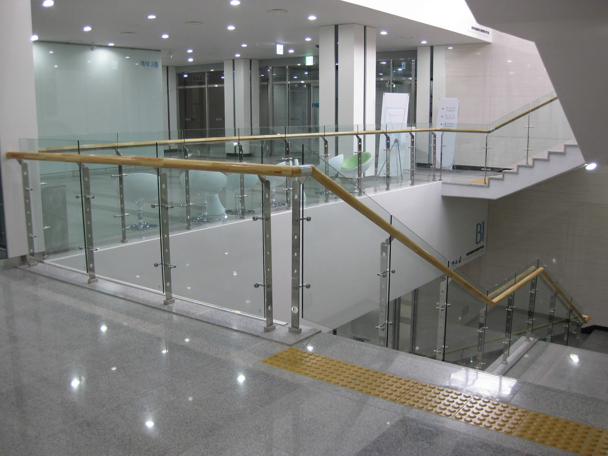

Kaca yaitu salah satu unsur yang cukup penting pada sebuah bangunan baik untuk rumah tinggal, pertokoan, gedung bertingkat maupun multi use building. Fungsi utama kaca yaitu sebagai pencahayaan natural dan juga sebagai komponen dari keindahan bangunan. Banyak jenis dari kaca yang bisa di pakai untuk banguan maupun rumah tinggal.
Jenis-ragam kaca diantara lain kaca tempered, kaca shower, railing kaca, kanopi kaca Lamongan dan masih banyak lagi. Tiap-tiap kaca memiliki fungsi masing-masing yang membuat banyak orang kian mebutuhkannya dari hari ke hari.
Distributor, Supplier & Jasa Pasang Kanopi Kaca Lamongan
Seiring dengan perkembangan zaman di dunia properti, sekarang kanopi kaca Lamongan terlah berkembang kencang mengikuti arsitektur modern . Harga dari tiap kaca yang ditawarkan cukup beraneka tergantung kaca yang nanti akan diaplikasikan. Ada sebagian alasan mengapa Pintu Kaca Shower banyak dipakai salah satunya adalah kaca lebih nampak bersih dan rapi dan juga lebih gampang dalam perawatannya. Jika tembus pandang, kaca menyerap cahaya yang masuk sehingga semakin tebal kaca karenanya kian sedikit sinar yang dapat melewatinya, maka sifat transparannya makin berkurang.|Di samping pintu kaca shower akan membikin kamar mandi kecil nampak lebih besar. Pada atap akrilik, perembesan cahaya yang terjadi demikian kecil sehingga sedangkan ketebalannya bertambah, sifat transparannya tidak banyak berubah.
Tak anda beratensi untuk memasang kaca kanopi pada rumah, gedung maupun kantor, anda dapat segera mengunjungi dis.or.id. Harga untuk setiap pemasangan malahan beragam sesuai dengan kebutuhan anda. Sekiranya itu, kanopi juga bisa melindungi mobil dan kendaraan lain anda. Banyak bangunan seperti gedung perkantoran, perumahan, ruko dan apartement yang menerapkan kanopi kaca Lamongan tempered. Disana anda akan memperoleh kanopi kaca Lamongan yang pantas dengan beragam ketebalan dan harga yang cukup relatif murah.
Info Lengkap Pemesanan
Google Maps: https://www.google.com/maps/d/u/0/viewer?mid=12-N5cMmHbEOEG6n-94L4JatnBnNRTFkr&ll=-7.27380280025364%2C112.65243155000007&z=18
Note: https://www.facebook.com/notes/distributor-of-industrial-supply/kontraktor-jasa-pasang-kanopi-kaca/1785710151728864/
Event: https://www.facebook.com/events/227495344457982/
Portfolio Produk: https://www.facebook.com/1681607345472479/photos/?tab=album&album_id=1712629809036899
Distributor & Supplier Kaca Shower
Kaca shower kini menjadi suatu hal yang banyak diminati sebab banyak orang yang menginginkan sebuah kamar mandi yang memiliki fungsi selain estetika adalah kenyamanan. Kecuali hal yang demikian kini dapat anda lakukan dengna menerapkan kaca shower untuk kamar mandi anda. Kaca shower ini dapat menjadi dan mempunyai poin keindahan tersendiri karena dengan memasangnya tentu kamar mandi anda akan tampak lebih indah dan mewah layknya kamar mani hotel. Shower screen yaitu kotak atau alat yang berfungsi sebagai penyekat ruang khusus untuk kamar mandi. Di samping pintu kaca shower akan membuat kamar mandi kecil kelihatan lebih besar. Apalagi sekarang telah ada kios penjual shower screen yang memasarkan produknya dalam metode satu paket termasuk pemasangannnya.
Tak anda sedang mencari kaca shower untuk kamar mandi, anda dapat seketika mengunjungi dis.or.id.
Distributor, Supplier & Jasa Pasang Kanopi Kaca

Seiring dengan perkembangan zaman di dunia properti, sekarang kanopi kaca Lamongan telah berkembang kencang mengikuti arsitektur modern. Bila akan memberikan kesan lapang dikala berada di kamar mandi, mandi dengan shower akan memberikan kesegaran tersendiri dibanding kamar mandi dengan bak mandi. Dan sensasi mandi menjadi lebih asik untuk dinikmati. Jadi telah tak heran lagi seluruh orang mau mencari harga yang benar-benar kompetitif untuk menyesuaikan budget atau anggaran mereka masing – masing untuk membuat produk canopy kaca. Ada banyak pilihan varian desain. Jika tembus pandang, kaca meresap sinar yang masuk sehingga kian tebal kaca maka kian sedikit sinar yang dapat melewatinya, maka sifat transparannya makin berkurang.|Di samping pintu kaca shower akan membikin kamar mandi kecil terlihat lebih besar. Pada atap akrilik, absorpsi sinar yang terjadi demikian kecil sehingga padahal ketebalannya bertambah, sifat transparannya tidak banyak berubah. Atap akrilik atau dapat juga disebut atap kaca acrylic ini banyak ditemukan di sebuah bangunan rumah, seperti ruko, apartemen, cafe, mall, sampai bangunan gedung.
Kecuali disana anda dapat menerima penawaran mengenai jasa pemasanga kanopi kaca Lamongan. Dis.or.id juga menyediakan jasa pemasangan kanopi kaca Lamongan yang tentunya dengan bantuan daya professional yang telah berpengalaman. Banyak bangunan seperti gedung perkantoran, perumahan, ruko dan apartement yang menggunakan kanopi kaca Lamongan tempered. Sesudah kaca untuk atap kanopi cukup digemari. Disana anda akan mendapatkan kanopi kaca Lamongan yang layak dengan berbagai ketebalan dan harga yang cukup terjangkau.
Jasa Maintenance Kaca
Jasa maintenance kaca menjadi solusi bagi Anda yang mempunyai gedung yang terbuat dari kaca. Umumnya ditahui banyak pemilik gedung kaca yang mau merawat bangunan. Kaca menjadi kusam. Perlengkapan jenis kotoran seperti debu serta cahaya matahari dan juga hujan tak jarang membuat kaca gedung menjadi kusan dan tidak menarik. Membersihkan bagian kaca gedung Anda yang mungkin rusak, pecah, atau mengalami permasalahan lainnya.
Tidak anda beratensi, anda dapat langsung mengunjungi website dis.or.id untuk mengamati info lebih lanjut mengenai jasa maintenance kaca yang di tawarkan. Disana anda dapat memanfaatkan jasa maintenance kaca dengan daya spesialis yang mampu membersihkan gedung kaca dengan produk pembersih kaca apa yang terbaik untuk menghilangkan kotoran dan kusam. Dis.or.id juga sudah mempersiapkan dengan pelbagai alat yang dapat dipakai untuk menjangkau seluruh sudut gedung, sekalipun gedung Anda sungguh-sungguh tinggi. Dengan sudah memberikan training terhadap energi pakar sehingga mereka sudah bisa melaksanakan pekerjaan mereka dengan betul-betul baik. Selain hanya dalam hal membersihkan kaca, mereka juga kapabel melaksanakan perbaikan serta penggantian kaca yang mengalami kerusakan.
Jasa Pemasangan Kaca Tempered
Kian banyak orang yang mau menerapkan kaca ini. Dis.or.id mempunyai seluruh tenaga ahli yang di rekrut cuma mereka yang profesional yang tahu persis bagaimana metode memakai alat dan bagaimana membersihkan kaca gedung bertingkat. Selain ini tak lain sebab semakin banyak orang yang memahami mutu serta keunggulan dari kaca tempered ini.
Salah satu macam kaca yang cocok untuk digunakan pada segala jenis bangunan maupun perindustrian yakni kaca tempered, merupakan yang paling aman karena memiliki elastisitas lebih baik dibandingkan dengan kaca lazimnya. Harga untuk tiap pemasangan dijamin termurah dan hasil pelaksanaan yang pantas dengan harapan anda. Dis.or.id menawarkan jasa pemasangan kaca tempered sebab kami memiliki alat yang lengkap. Anda dapat segera mengunjungi dis.or.id untuk mendapatkan berita mengenai jasa pemasangan kaca tempered, menerapkan kaca tempered dan pastinya hasil yang diberi bahkan akan pantas dengan apa yang Anda inginkan.
Distributor & Supplier Pintu Kaca

Pintu kaca yaitu hal yang cukup penting dimiliki oleh sebuah bangunan. Banyak orang yang lebih menyenangi dengan teladan pintu kaca minimalis, adalah pintu kaca frameless. Tersedia juga almunium dan kayu seandainya Anda mau mempunyai pintu kaca dengan frame. Desain hal yang demikian dapat disesuaikan dengan konsep properti Anda. sebagian jenis kaca yang paling tak jarang diterapkan untuk membikin pintu kaca, mulai dari variasi kaca tempered hingga kaca non-tempered. Dalam hal ini, terdapat sebagian macam kaca dengan mutu yang terbaik. Kini paling banyak diminati ketika ini ialah kaca tempered karena jauh lebih kuat dan tahan lama.
Dis.or id siap menolong anda untuk membuatkan pintu kaca idaman anda. Sekiranya ahli yang sangat profesional sehingga sungguh-sungguh siap untuk menciptakan pintu kaca seperti apa yang berkeinginan Anda miliki.
Dis.or.id siap untuk membuat pintu kaca pantas dengan apa yang Anda inginkan. Anda dapat memilih kaca tempered yang kini ini sedang naik daun. Untuk budget yang lebih sedikit, Anda bisa memilih variasi kaca non-tempered.
Jual Kaca Cermin
Kaca cermin dapat dibuat aksesoris untuk mempercantik interior rumah Anda. Kaca cermin juga dihasilkan untuk yang lain seperti pintu. Kini, cermin tak hanya berbentuk persegi saja. Banyak produsen kaca cermin yang membuat dengan desain yang berbeda. Ada cermin yang didesain unik seperti penyerupai daun, oval, dan lain sebagainya. Untuk membuat ruangan private, maka kaca ini transparan bila diperhatikan dari dalam. Sementara itu, ketika diamati dari luar, kaca ini reflektif. Cermin minimalis mempunyai siku.
Akan namun, ada juga alternatif lain berupa kaca cermin yang berbingkai. Tak saja, desainnya saja yang dirubah. Ada yang terbuat dari plastik, kayu, dan aluminum. Karenanya hanya persegi atau persegi panjang. Tak model lemari pakaian di mana bagian pintunya terbuat dari kaca cermin. Cermin ini umumnya ditempatkan di kamar mandi, di atas wastafel, atau di kamar tidur. Atau kaca cermin ini juga bisa diciptakan sebagai bahan pintu lemari. Disana anda bisa mendapatkan kaca cermin yang pantas dengan kemauan anda.
Jasa Pemasangan Railing Kaca

Railing kaca menjadi salah satu bagian yang akan membuat kelihatan sangat minimalis. Tak Anda ingin mempunyai rumah dengan desain interior minimalis, betul-betul pas saat komponen tangga dan juga balkon memakai railing kaca ini. Lupakan bahan seperti kayu. Pun aksesoris seperti pada pegangan tangga pun tak terbuat dari bahan kayu lagi tetapi kaca dan aluminum. Mereka tidak lagi membuat pagar tangga atau balkon dari kayu. Tidak kaca ini pecah, pecahannya halus sehingga tak akan melukai orang. Bahkan juga bahan yang digunakan.
Anda bisa memilih kaca dengan kualitas terbaik. Tidak ini tak cuma ditetapkan oleh ketebalan atau harga melainkan juga oleh macam. Railing ini bisa diwujudkan sebagai pembatas pada tangga dan juga sebagai pembatas pada balkon. Jikalau itu, sekiranya terjadi musibah gempa bumi dan rupanya kaca pecah, kaca tempered ini akan pecah dan menyusun pecahan yang betul-betul kecil dan lembut. Dikatakan amat aman lantaran kaca tempered tidak menimbulkan pecahan yang runcing saat tiba-tiba kaca pecah entah itu pengaruh kecelakaan atau bencana seperti gempa. Apabila memberikan kesan minimalis pada interior rumah, ini juga membikin rumah Anda kelihatan lebih nyaman untuk dibuat tempat tinggal.
Distributor & Supplier Pintu Lipat Kaca

Ketika ini, opsi jenis kaca berbagai dan bervariasi. Lalu, berapakah harganya? Anda mungkin mengira bahwasannya kaca ini ditawarkan dengan harga selangit. Apalagi jikalau taman Anda terbuka sehingga pencahayaan natural masuk. Maka, sinar itupun akan masuk ke dalam ruang makan sebab penyekatnya terbuat dari pintu kaca transparan.
Tak hanya itu, pintu lipat kaca dapat Anda pasang di kamar lantai atas yang ada balkon. Namun bukan itu saja, aksesoris pelengkap juga berdampak. Anda patut menetapkan aksesoris yang melengkapi pintu kaca lipat mempunyai mutu terbaik, seperti teladan hinges. Dan yang pasti, ruangan menjadi lebih modern, minimalis, dan nyaman untuk ditempati.
Jasa Pemasangan Kubikel Toilet

Dikala ini banyak desain toilet yang didominasi oleh kubikel/cubicle yang mempunyai tampilan lebih modern dan mewah. Kubikel kamar mandi dapat di gunakan di toilet mall.
Kaca sekarang banyak diaplikasikan sebagai penyekat ruang. Salah satunya di kamar mandi. Bila anda beratensi untuk memiliki kubikel toilet, anda bisa segera mengunjungi dis.or.id.
Tersedia pelbagai ukuran serta ketebalan dari kubikel yang dapat anda pilih layak dengan yang anda inginkan.
Justru embun dapat menempel di kaca dan lambat laun bisa membikin kaca tak sejernih semula. Kaca shower yang di jual di jamin kaca shower yang memiliki kualitas terbaik dan berkwalitas tinggi.
Distributor & Supplier Partisi Kaca

Partisi kaca menjadi opsi yang tepat bagi Anda yang mau menghemat bangunan. Anda dapat bandingkan sendiri berapa yang Anda patut siapkan untuk partisi tembok. Anda mesti beli batu bata, pasir, dan semen. Kecuali itu, pelaksanaannya juga memakan waktu sehingga Anda menghembat biaya pemasangan. Tarif ini menghemat tarif bangunan. rumah, kini perkantoran juga sedemikian rupa agar tampak benar-benar minimalis dan menarik. Lain apabila Anda memilih mengaplikasikan partisi kaca. Bahan ini lebih murah dan mudah dalam pemasangan. Selain, Anda harus perhatikan kwalitas kaca yang digunakan. Partisi kaca dengan kwalitas terbaik dan anda di dis.or.id. Disana anda menerima partisi kaca dengan harga yang sangat relatif murah.